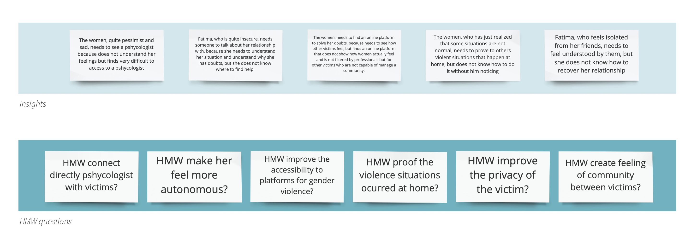

You First
Empowering gender-based violence victims
The premise of the project was to design a solution to improve the user experience, from the ground up with no restrictions as to the type or subject matter of the product/service.
In my case, I chose to tackle the problem of gender-based violence victims. I wanted to do my bit to empower women in such a difficult situation. Because of how sensitive the topic is, I had to develop an extensive research.
ROLE Sole Product Designer
CONTEXT Final project
TOOLS Sketch, Figma | Overflow, Miro, Whimsical
MORE INFO Research article | Design article
_____________00CONTEXT
"Gender-based violence is a phenomenon deeply rooted in gender inequality, and continues to be one of the most notable human rights violations within all societies. Gender-based violence is violence (Physical or Psychological) directed against a person because of their gender. Both women and men experience gender-based violence but the majority of victims are women and girls."
_____________01RESEARCH
I started the research developing Research Questions to understand what women (users) feel during a toxic relationship. How is the environment of the victim, and why and how is the current competence working to help them. Decided to focus on two different stages:
- Understanding victims' environment. With an online survey to understand how the current society see their relationships and what is the meaning of genderñbased violence relationships for them.
- Understanding deeply the feelings of the victim. With Desk Research, Netnography, and the most important In-depth interviews.
_____________02PERSONA & IDEATION
Thanks to the In-depth interviews and the study of two different personas with Empathy map and a User Journey Map. I discovered that most victims don't have how to proof the situations ocurred at home. Then, I prioritized the insights I extracted during all the research process and developed HMW to converge all the ideas I had during the divergent stage of research.
_____________03VALUE PROPOSITION
YOUFIRST is a solution sponsored by the Gender Violence victims association. It is a mobile app that can be connected with a Device. This Device allows the victim recording situations occurred at home by Voice User Interface, without her partner noticing. The app creates a community of victims , where each one can write their anonymous story of their relationship. The women can also directly talk with her pshycologist.
_____________04HAPPY ENDING
YOU first was one of the three projects presented in the show time and I had the opportunity to develop my storytelling skills. Thanks to this opportunity, You first is today in progress to become real. I am currently working with developers and association to continue working on how can we empower these women doing our bit to achieve it.
To know more about YOU FIRST, please check out the Medium article!